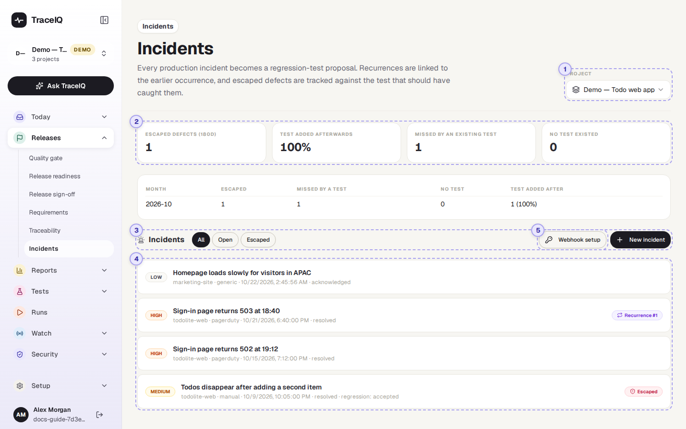
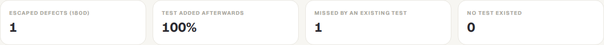
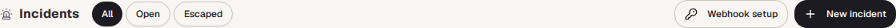
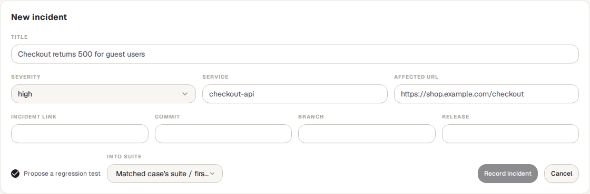
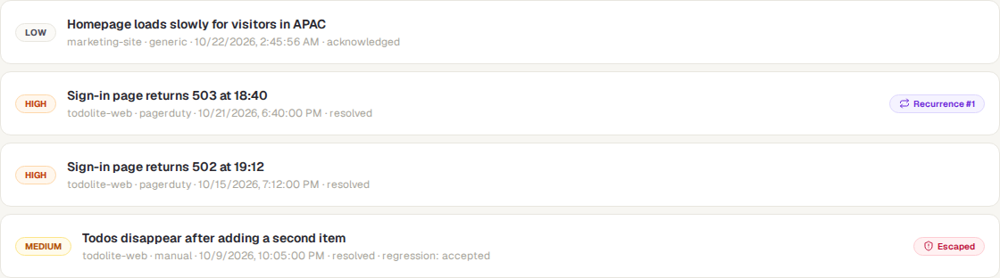
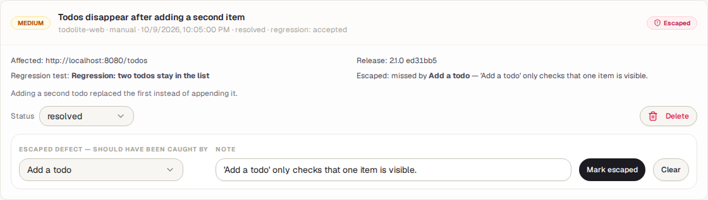
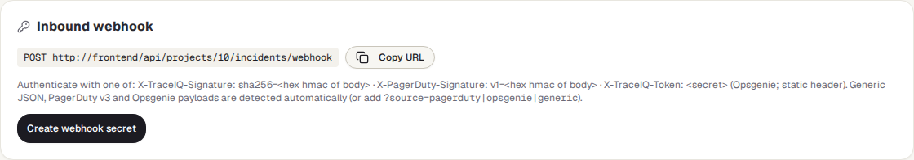

Incidents
A list of the problems that reached your live site. For each one, TraceIQ notices when the same problem happened before, suggests a test that would catch it next time, and lets you record whether a test should have caught it. That last part gives the escaped defects count at the top.
What it is for
An incident is something going wrong in production: an outage, an error page, a broken checkout. Incidents answers "What got past our tests, and are we making sure it can't happen again?" Incidents can be typed in by hand or sent in automatically by a paging tool such as PagerDuty or Opsgenie.
On-call and support
Record an incident and see straight away whether it has happened before.
Testers
Get a suggested test for each incident, so the same bug is caught before the next release.
Leads
Track escaped defects over time, and how often a test was added afterwards.
Where to find it: in the sidebar, open Releases → Incidents.
A tour of the screen
The demo's web project has four incidents: two sign-in outages that are the same problem, one escaped defect and one minor slowdown. The numbers on the screenshot match the sections below.

Project
The project whose incidents are shown. This is the same choice as the project picker at the top of the sidebar: changing it here changes it for the whole app.
Escaped defects

An escaped defect is an incident that someone has marked as a bug the tests should have caught (see Marking an escaped defect). The tiles count those that started in the last 180 days:
| Tile | What it counts |
|---|---|
| Escaped defects (180d) | All incidents marked as escaped defects. |
| Test added afterwards | The share of them that got a new regression test, created after the incident started. Linking a test that already existed doesn't count. Shows "—" while there are none. |
| Missed by an existing test | A test existed but didn't catch it. |
| No test existed | Nothing tested that part at all. |
Once there are escaped defects, a table under the tiles splits the same numbers by month (the month the incident started). In the demo, the one escaped defect was missed by an existing test, and a regression test was added after it, hence 100%.
Filters and buttons

- All / Open / Escaped: show every incident, only those with status open, or only escaped defects.
- Webhook setup (⑤) shows how a paging tool can send incidents in (see below).
- New incident opens a form to record one by hand.

| Field | What to enter |
|---|---|
| Title | What went wrong, in a line. The only required field. |
| Severity | critical, high (chosen at first), medium or low. |
| Service | The part of the system affected, for example checkout-api. Used to recognise repeats. |
| Affected URL | The page or address that failed. Used to find the test that covers it, and as the starting page of the suggested test. |
| Incident link, Commit, Branch, Release | Optional: where the incident is described, and which version of the app was live. |
| Propose a regression test / Into suite | On at first: TraceIQ drafts a test meant to catch this problem, in the suite you pick (or, if you don't, the suite of the matching test, else the project's first suite). |
Press Record incident to save it, or Cancel. A message says whether it is a repeat ("Recorded — recurrence #2") and the number of the suggested test.
The incidents

Up to 200 incidents, newest first (by when they started). Each row shows the severity, the title, then the service, where it came from (manual, pagerduty, opsgenie or generic), when it started, its status and the state of its regression test. On the right, a Recurrence #N label when the same problem happened before, and Escaped when it is marked as an escaped defect. In the demo, the 503 sign-in outage is Recurrence #1 of the 502 one a week earlier: same service, same title once the numbers are taken out. Click a row to open it:

- Details: the incident link, the affected address, the release and commit, the previous occurrence (incident #12), what TraceIQ matched it to (a test and/or a failure group, with the reason), and its regression test or suggestion (which links to Proposals).
- Status: open, acknowledged or resolved. Changing it saves straight away; resolved also records the time it was resolved.
- Propose regression test asks for a suggested test again (only when there is no regression test and no suggestion waiting for review).
- Delete removes the incident after you confirm.
- Marking an escaped defect: under Escaped defect — should have been caught by, choose the test that should have caught it, or No test existed; add a note on why it slipped through, and press Mark escaped. Clear removes the mark.
- A repeat has the same service and the same title once numbers, IDs and times are taken out. "Checkout API 503 for 12% of requests at 10:42" and "Checkout API 502 for 40% of requests" are the same problem. The new incident is labelled Recurrence #N and points to the previous one.
- The related test is one that opens the affected address (the best evidence), or else one whose name shares at least two significant words with the title. A failure group from Failure triage is matched by shared words too. These are guesses, shown with their reason.
Webhook setup

A webhook lets another tool send incidents to TraceIQ as they happen. The panel shows the address to send them to, and how the sender proves it is allowed: a signature made with a shared secret (TraceIQ's own or PagerDuty's format), or, for Opsgenie, which can't sign, the secret itself in a header. TraceIQ recognises plain JSON, PagerDuty and Opsgenie messages by itself.
- Create webhook secret makes the secret and shows it once; copy it into your paging tool then. Later the button reads Rotate secret, which replaces it (the old one stops working at once).
- Once there is a secret: Regression proposals go to (the suite for suggested tests), Enabled, Delete webhook, and when the last incident arrived.
- While there is no secret, or the webhook is switched off, the address answers as if it didn't exist.
- When the paging tool updates an incident it already sent (acknowledged, resolved), TraceIQ updates the same incident instead of adding a new one.
Seeing this panel needs the editor role; creating, rotating, changing or deleting the webhook needs project admin, and can't be done with an API key.
Watch it in use
How to…
…record an incident by hand
- Press New incident. (You need the editor role.)
- Type the title, pick the severity, and fill in the service and affected address if you know them.
- Leave Propose a regression test ticked, choose the suite, and press Record incident.
- Review the suggested test on Today → Proposals.
…send incidents in from PagerDuty or Opsgenie
- Ask a project admin to open Webhook setup and press Create webhook secret.
- Copy the address and the secret into the paging tool's webhook settings (the secret is shown only once).
- Choose where suggested tests should go under Regression proposals go to. New incidents then arrive by themselves, each with a suggested test.
…record that a test missed a bug
- Open the incident.
- Under Escaped defect, choose the test that should have caught it, or No test existed.
- Add a short note and press Mark escaped. The tiles at the top update.
Good to know
- Suggested tests are only suggestions. They wait on Proposals until a person accepts them (a workspace can let confident ones through automatically; an incomplete draft never). Without an AI set up, the suggestion is an empty outline to fill in.
- A repeat is recognised from the incident as it arrived. Editing an incident later doesn't change what it is matched with.
- Incidents feed the delivery report. The Delivery (DORA) report uses them for "change failure rate" and "time to restore".
- Who can do what. Anyone with access to the project can look. Recording, editing, marking and deleting need the editor role. Every change is written to the audit log.
- Times are shown in your own time zone.
Related pages
Proposals
Where suggested regression tests wait for review.
Delivery (DORA)
Change failure rate and time to restore, worked out from deployments and incidents.
Failure triage
Failures grouped by cause; an incident can be matched to one of these groups.
On-call
Who gets paged when a monitor finds the live site down.